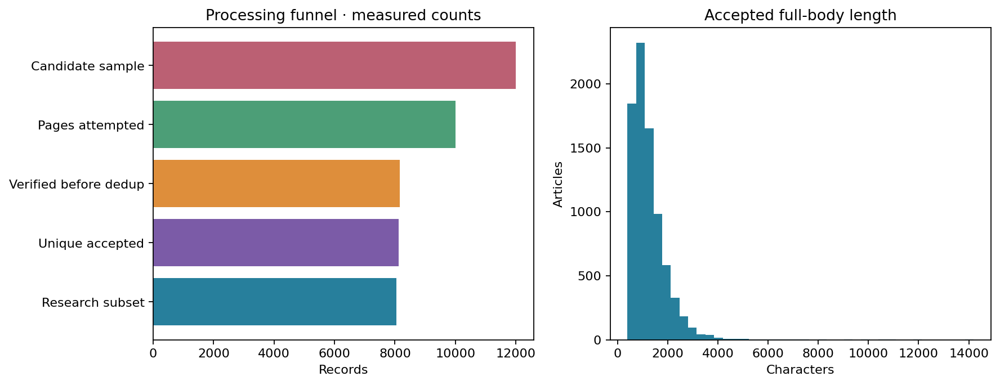
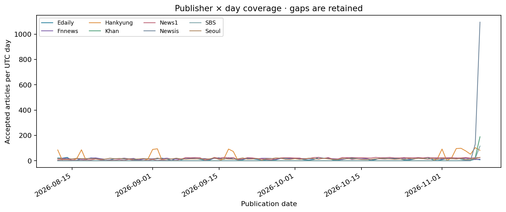
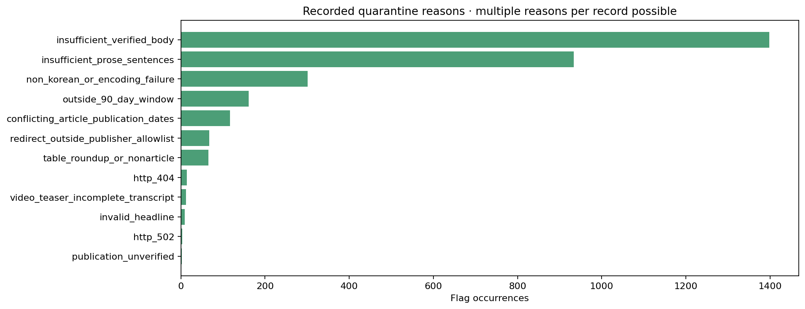
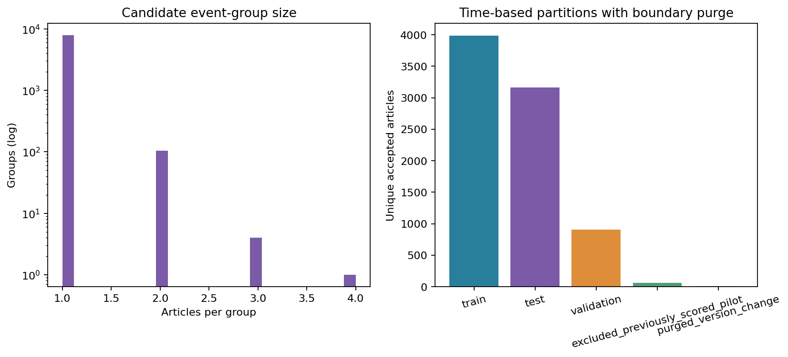

NEWS2NEURON · CORPUS QUALITY AUDIT V2
최근 90일 한국어 뉴스
수집·본문 확인·중복 제거·분할 감사
설정 기간(UTC): 2026-08-12 ~ 2026-11-09. 공식 매체 사이트맵으로 후보를 찾고 실제 기사 응답에서 본문과 발행일 근거를 확인했습니다.
대규모 자료의 점수는 검증 전 단어 규칙 baseline입니다. 기존 240건의 세션 판단을 새 기사의 정답으로 옮기지 않았습니다. 사건 묶음은 자동 후보이며 사람 검증은 아직 없습니다.
8,128본문 확인·정제 후 고유 기사
10,000확인 시도한 페이지
12,000확인 전 후보 표본
8매체
90자료가 있는 UTC 날짜
8,013확정 전 사건 후보
서로 다른 수를 구분해 기록했습니다
사이트맵에서 발견한 전체 고유 URL은 427,587개입니다. 이 목록은 날짜 미확인·기간 밖 후보를 포함하며 검증된 기사 수가 아닙니다. URL/사이트맵 날짜 힌트에 따른 범위 후보는 400,333개이며 실제 발행일은 기사 본문 메타데이터에서 다시 확인합니다.
후보 표본 12,000건에서 10,000건을 확인했고, 8,156건이 본문·날짜 기준을 통과했습니다. 중복 28건을 제거한 뒤 8,128건을 보존했습니다.
경계 사건·후기 수정·기존 평가 중복을 제외하고 매체 비중을 제한한 연구용 부분집합은 8,056건입니다. 원자료를 삭제하지 않고 선택 여부를 별도 필드에 남겼습니다. 목표 3천 건 달성: 예 · 매체 목표 달성: 예.

매체·시간 분포
날짜별 제공 범위가 매체마다 다릅니다. 빈 날짜를 채우거나 한두 매체의 시계열을 전체 한국 뉴스로 일반화하지 않았습니다.

|
articles |
first_publication |
last_publication |
median_body_chars |
covered_days |
| source |
|
|
|
|
|
| Edaily |
1173 |
2026-08-12T00:00:15+00:00 |
2026-11-09T09:54:45+00:00 |
1205.0 |
90 |
| Fnnews |
1385 |
2026-08-12T00:01:04+00:00 |
2026-11-09T15:16:22+00:00 |
974.0 |
90 |
| Hankyung |
1195 |
2026-08-12T00:00:08+00:00 |
2026-11-09T15:16:29+00:00 |
1129.0 |
18 |
| Khan |
215 |
2026-11-08T21:00:00+00:00 |
2026-11-09T12:54:00+00:00 |
1257.0 |
2 |
| News1 |
1469 |
2026-08-12T01:50:27+00:00 |
2026-11-09T12:37:27+00:00 |
1109.0 |
90 |
| Newsis |
1226 |
2026-11-08T15:00:00+00:00 |
2026-11-09T15:17:12+00:00 |
874.5 |
2 |
| SBS |
147 |
2026-11-05T23:32:58+00:00 |
2026-11-09T15:29:35+00:00 |
919.0 |
5 |
| Seoul |
1318 |
2026-08-12T00:40:21+00:00 |
2026-11-09T14:52:38+00:00 |
1148.0 |
90 |
제외와 보류 근거
본문 부족·발행 시각 충돌·접근 제한·비기사 자료 등을 서로 구분했습니다. 한 기사에 사유가 여럿일 수 있어 아래 빈도의 합은 제외 기사 수와 다를 수 있습니다.

중복과 사건, 시간 순서 분할
완전히 같은 본문과 거의 같은 재송고는 중복으로 묶었습니다. 제목이 같다는 이유만으로 다른 본문을 삭제하지 않았고, 수치가 달라진 후속 보도는 보존했습니다. 사건 후보는 최대 72시간 범위 안에서 묶었습니다.
학습은 10월 11일까지, 검증은 10월 25일까지, 테스트는 이후 기간입니다. 같은 사건 후보가 시간 경계를 넘으면 양쪽에 나누지 않고 경계 보류로 분리했습니다. 명시된 수정 시점이 구간을 넘은 기사도 보류하며, 확인된 기존 240건 평가와 겹치는 기사·연결 그룹은 평가용 부분집합에서 제외했습니다.
자동 사건 묶음이 모든 의미상 누출을 찾았다는 뜻은 아닙니다. 수정 시각이 없는 경우를 표시했고 현재 수집한 본문이 과거 발행 당시와 같다고 보증하지 않습니다. 발행일 분할만으로 과거 시점 예측 성능이 입증되지는 않습니다.

현재 검증과 남은 일
- 자동 일관성 감사 상태: passed. 원문은 비공개 캐시에 보존하고 해시로 추적합니다.
- 공개 파일에는 짧은 발췌만 제공하며 전문·개인 생리 자료를 배포하지 않습니다.
- 사람 독립 품질검수 양식 120건과 별도 사람 라벨 후보 240건을 준비했습니다. 빈 양식은 완료한 검수나 사람 레이블이 아닙니다.
- 단어 규칙의 점수는 모델 개발 전 진단용입니다. AI/사람 정확도, 위협 회로의 생물학적 타당성, 인간 스트레스는 입증하지 않았습니다.